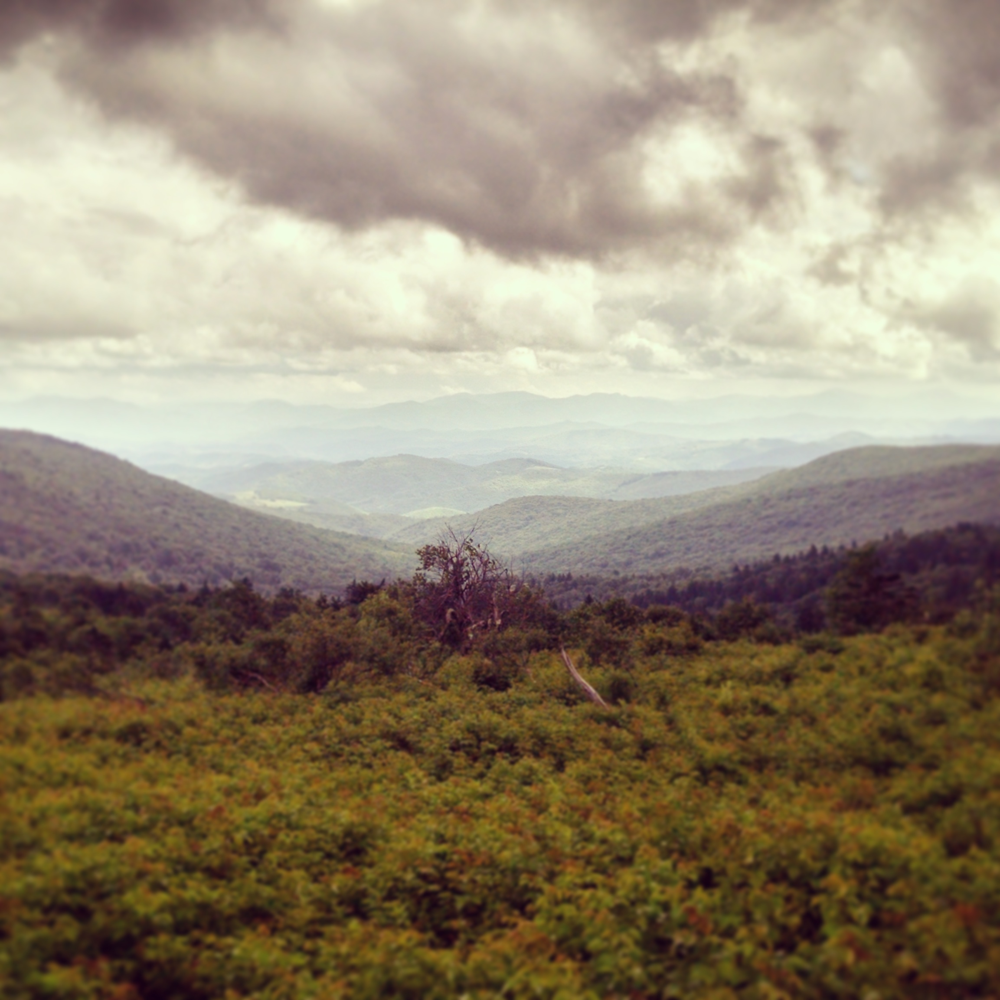
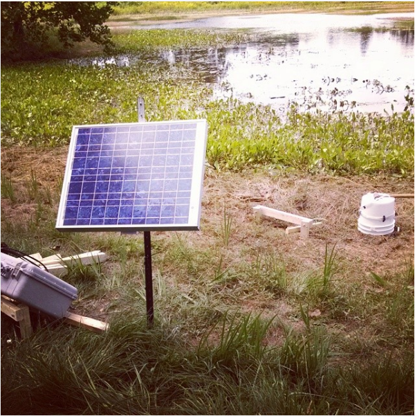
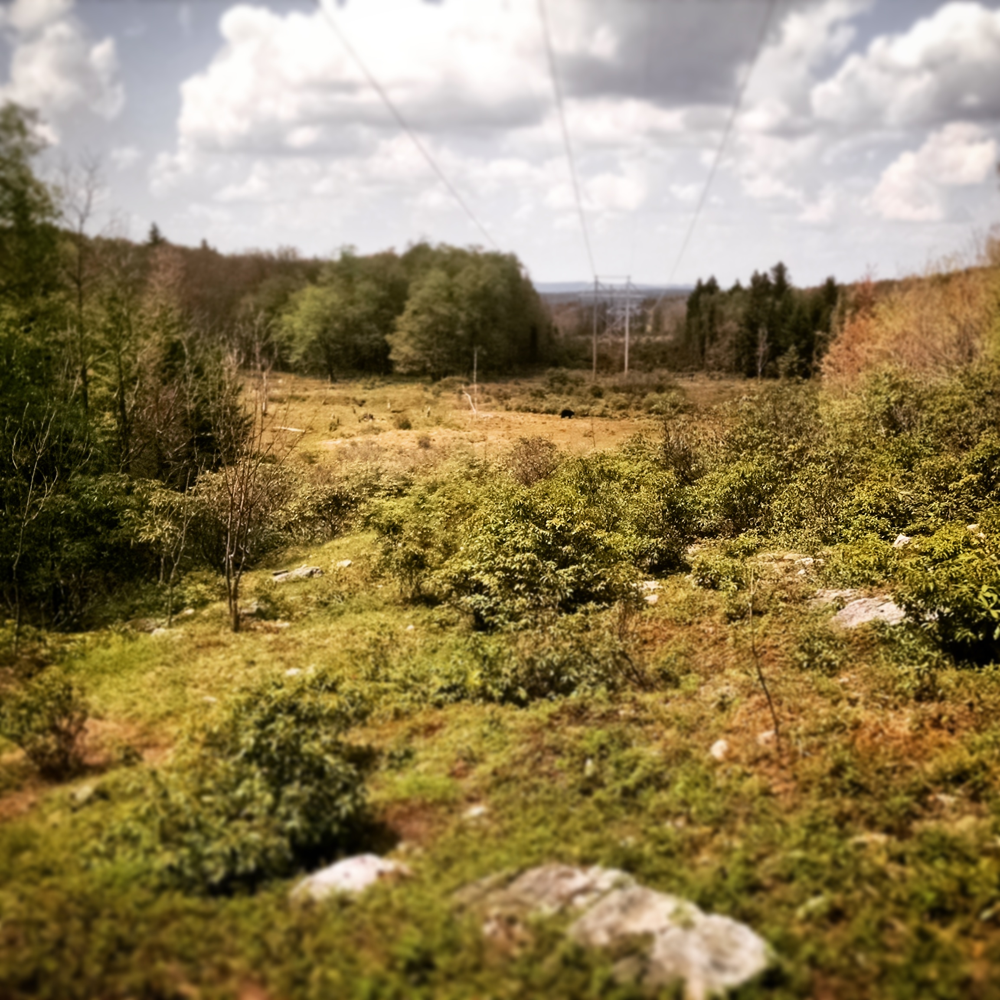

jeff atkins
cv | research | publications | data and code | other stuff
I am an ecologist and post-doctoral scholar at Virginia Commonwealth University interested in the interaction
the effects and relationships of ecosystem complexity (both physical and biological) on biogeochemical cycles and processes.
I am also interested in the effects of inter-annual climate variability on ecosystems.
I employ a combination of remote sensing and statistical/modelling techniques along with lab and field work in my research.
I have also worked with the Shenandoah Watershed Study and Virginia Trout Stream Sensitivity Study (SWAS-VTSSS),
a monitoring and research program focused on understanding the biogeochemistry of mountain headwater streams
in Virginia, West Virginia, and Maryland--including Shenandoah National Park and other public lands.



